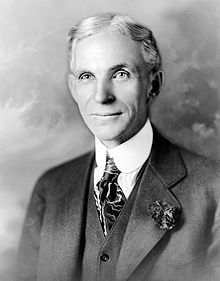

Henry Ford (July 30, 1863 – April 7, 1947) was an American industrialist, the
founder of the Ford Motor Company, and the sponsor of the development of the
assembly line technique of mass production.
Although Ford invented neither the automobile nor the assembly line, he
developed and manufactured the first automobile that many middle class Americans
could afford. In doing so, Ford converted the automobile from an expensive
curiosity into a practical conveyance that would profoundly impact the landscape
of the 20th Century. His introduction of the Model T automobile revolutionized
transportation and American industry.
As the owner of the Ford Motor Company, he
became one of the richest and best-known people in the world. He is credited
with "Fordism": mass production of inexpensive goods coupled with high wages for
workers. Ford had a global vision, with consumerism as the key to peace.
His
intense commitment to systematically lowering costs resulted in many technical
and business innovations, including a franchise system that put dealerships
throughout most of North America and in major cities on six continents. Ford
left most of his vast wealth to the Ford Foundation and arranged for his family
to control the company permanently.
Ford was also widely known for his pacifism during the first years of World War
I, and for promoting antisemitism through his newspaper The Dearborn Independent
and the book The International Jew.
In 1891, Ford became an engineer with the Edison Illuminating Company. After his
promotion to Chief Engineer in 1893, he had enough time and money to devote
attention to his personal experiments on gasoline engines.
These experiments
culminated in 1896 with the completion of a self-propelled vehicle which he
named the Ford Quadricycle. He test-drove it on June 4. After various test
drives, Ford brainstormed ways to improve the Quadricycle.
Also in 1896, Ford attended a meeting of Edison executives, where he was
introduced to Thomas Edison. Edison approved of Ford's automobile
experimentation. Encouraged by Edison, Ford designed and built a second vehicle,
completing it in 1898.
Backed by the capital of Detroit lumber baron William H.
Murphy, Ford resigned from the Edison Company and founded the Detroit Automobile
Company on August 5, 1899. However, the automobiles produced were of a lower
quality and higher price than Ford wanted. Ultimately, the company was not
successful and was dissolved in January 1901.
With the help of C. Harold Wills, Ford designed, built, and successfully raced a
26-horsepower automobile in October 1901. With this success, Murphy and other
stockholders in the Detroit Automobile Company formed the Henry Ford Company on
November 30, 1901, with Ford as chief engineer.
In 1902, Murphy brought in Henry
M. Leland as a consultant; Ford, in response, left the company bearing his name.
With Ford gone, Murphy renamed the company the Cadillac Automobile Company.
Teaming up with former racing cyclist Tom Cooper, Ford also produced the 80+
horsepower racer "999" which Barney Oldfield was to drive to victory in a race
in October 1902. Ford received the backing of an old acquaintance, Alexander Y.
Malcomson, a Detroit-area coal dealer.
They formed a partnership, "Ford &
Malcomson, Ltd." to manufacture automobiles. Ford went to work designing an
inexpensive automobile, and the duo leased a factory and contracted with a
machine shop owned by John and Horace E. Dodge to supply over $160,000 in parts.
Sales were slow, and a crisis arose when the Dodge brothers demanded payment for
their first shipment.